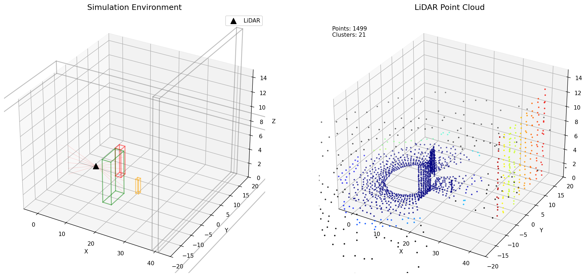
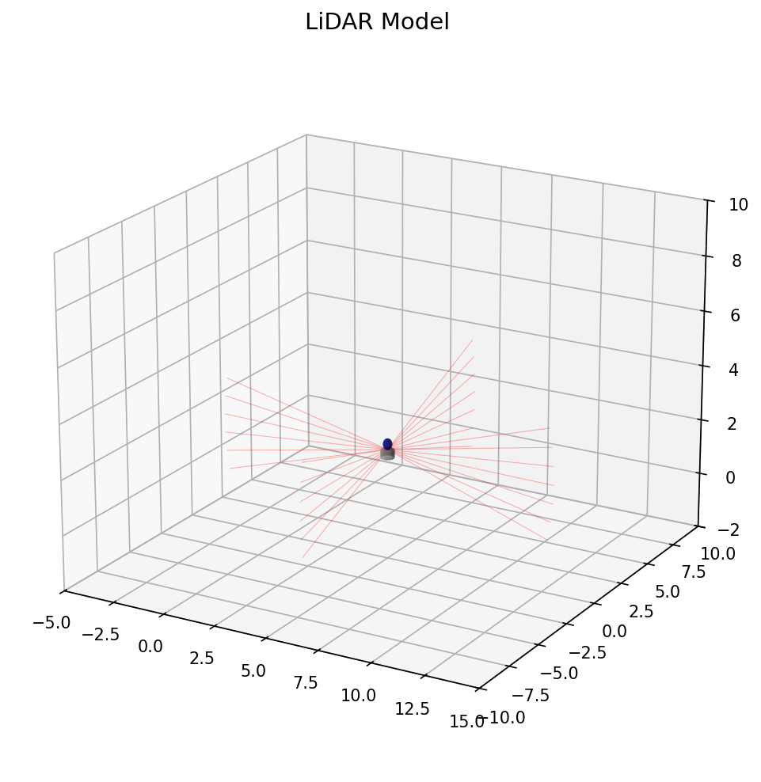
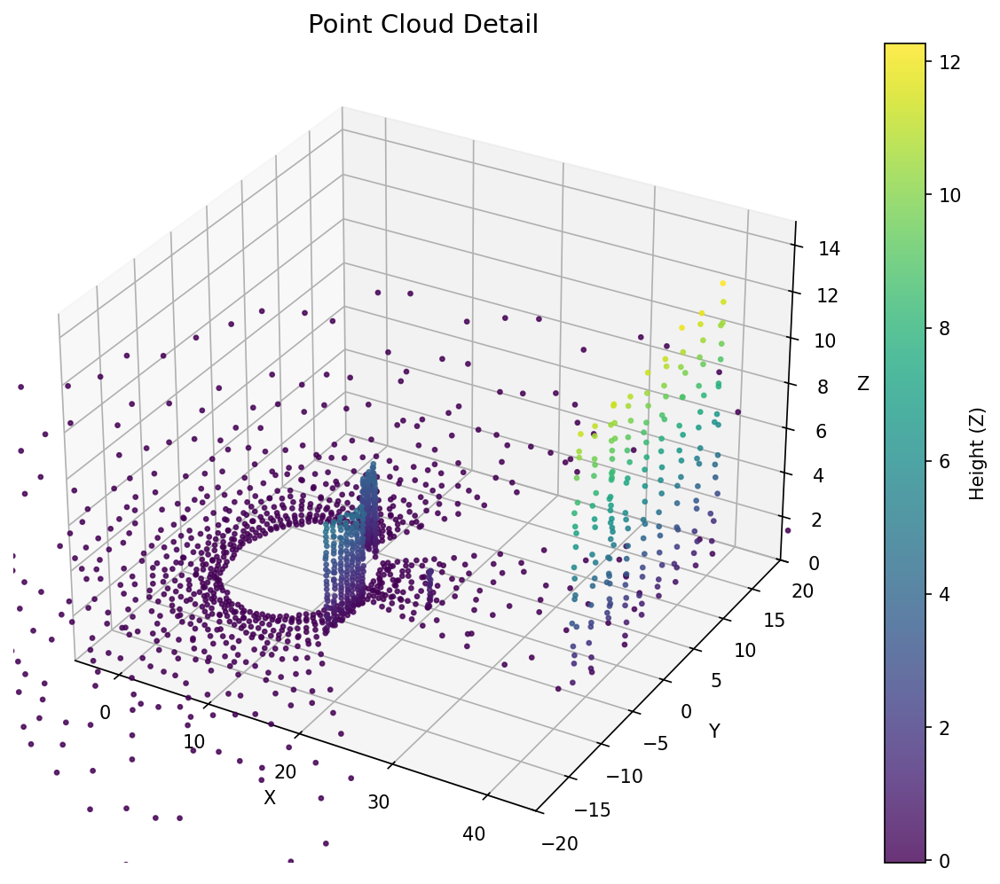
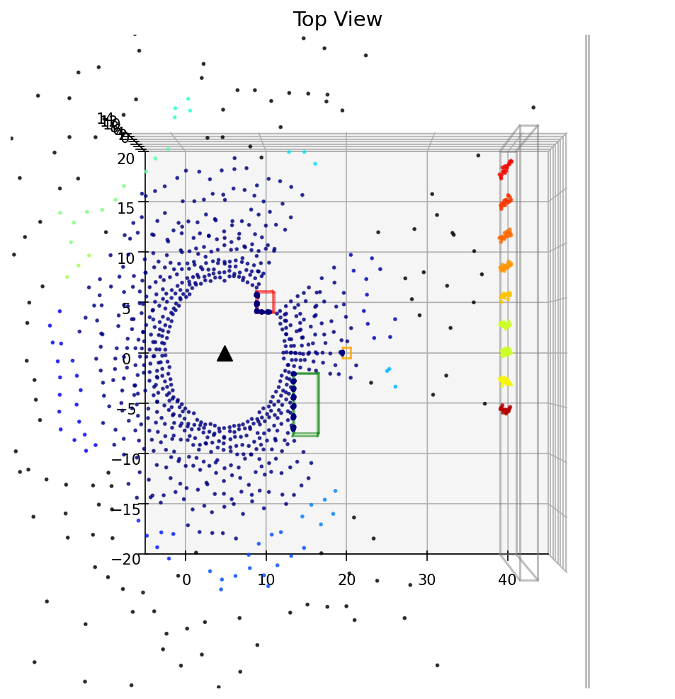
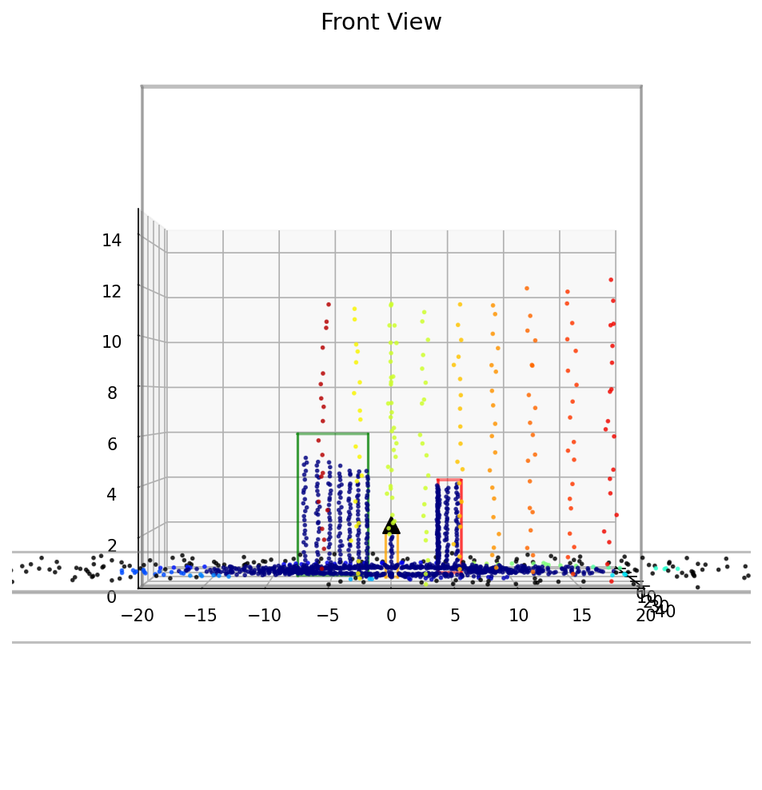
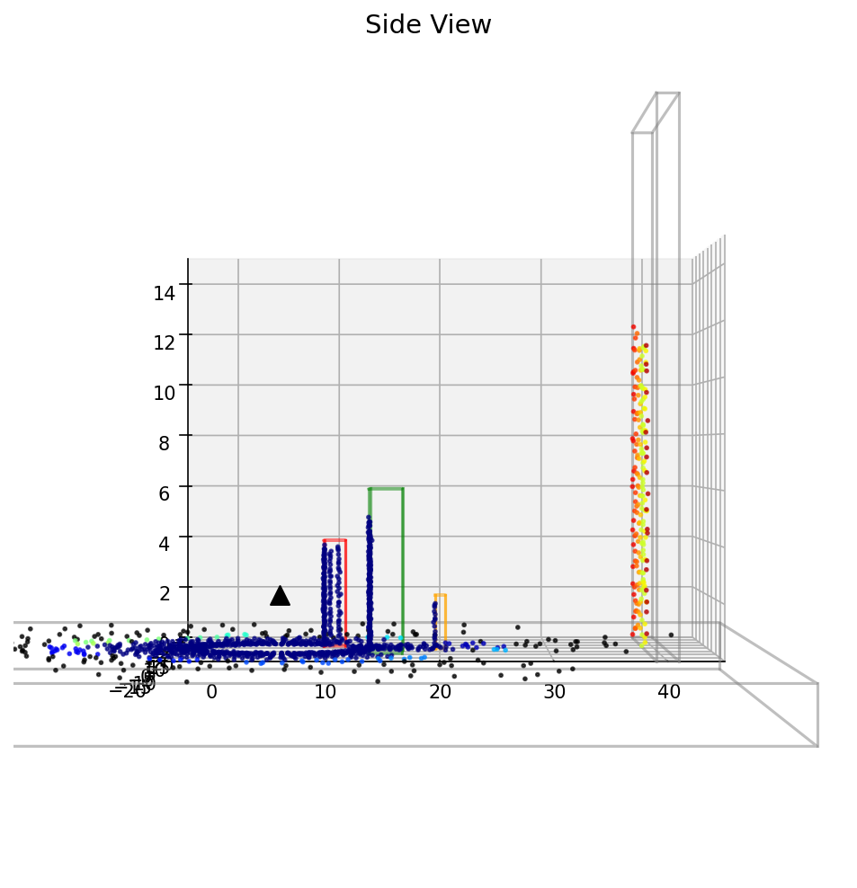
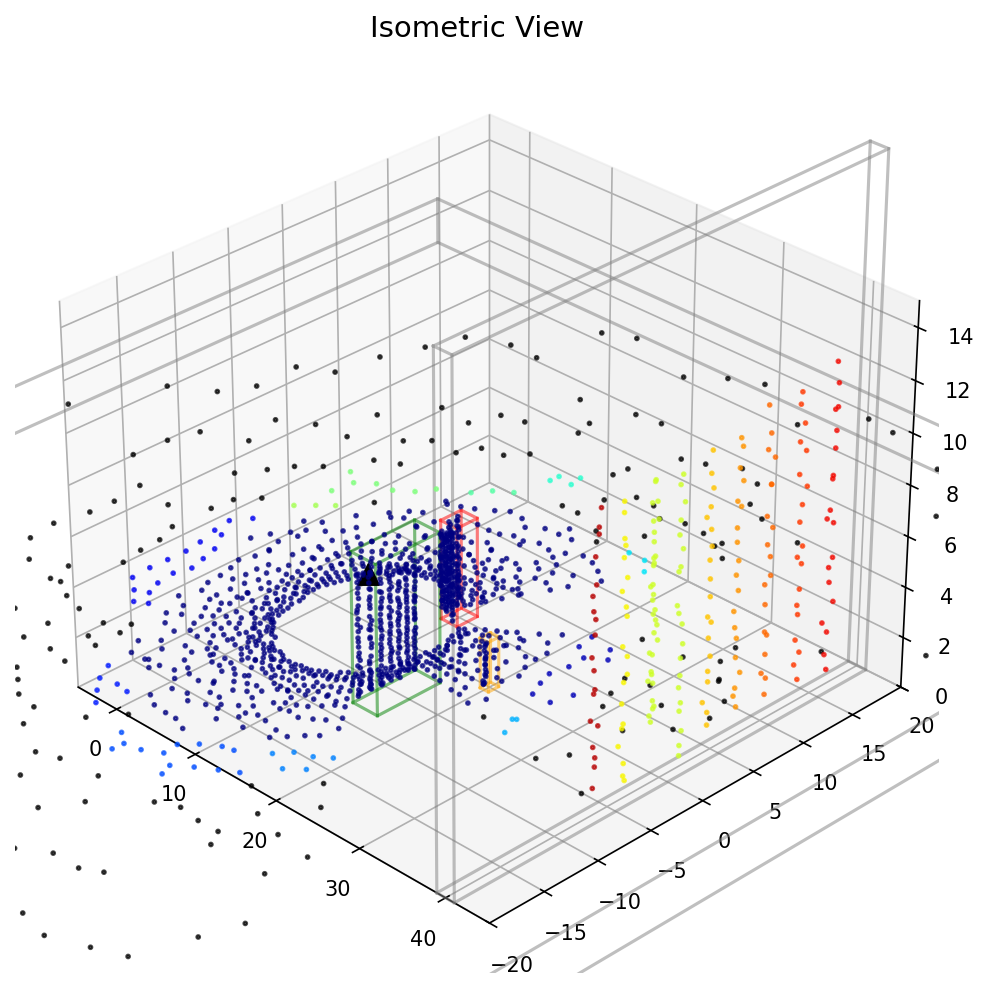

通过本系统的学习，学生将能够：
了解点云数据的结构和特性
掌握 Python 3D 可视化技术
理解动画和交互的实现方法
了解点云处理基础
掌握碰撞检测与环境感知
实践仿真系统开发
| 知识领域 | 要求程度 | 说明 |
|---|---|---|
| Python 编程 | 中级 | 熟练使用 NumPy、面向对象编程 |
| 线性代数 | 基础 | 向量运算、坐标变换 |
| 计算机图形学 | 基础 | 3D 坐标系、投影变换 |
| 机器学习 | 可选 | 了解聚类算法概念 |
lidar_demo/
├── lidar_simulation.py # 基础版本（Matplotlib）
├── lidar_simulation_interactive.py # 交互式版本（键盘控制）
├── lidar_simulation_open3d.py # Open3D 高性能版本
├── lidar_simulation_dual.py # Open3D 双窗口版本
├── lidar_simulation_stable.py # 稳定版本
├── environment.yml # Conda 环境配置
└── docs/
├── textbook/ # 教学文档
└── images/ # 图片资源
LiDAR 仿真通过发射虚拟射线并检测与环境物体的交点来模拟真实的激光扫描。
对于每条射线：
1. 确定射线起点（LiDAR 位置）
2. 确定射线方向（基于水平和垂直角度）
3. 计算射线与场景中所有物体的交点
4. 返回最近的交点作为测量结果
# 射线由起点和方向向量定义
class Ray:
origin: np.array # 起点 (x, y, z)
direction: np.array # 方向向量（单位向量）
# 射线上任意点表示为：
P(t) = origin + t * direction
# t = 0 时为起点，t > 0 时为射线正方向上的点
def _generate_ray_dirs(self):
"""生成所有射线的方向向量"""
# 垂直角度范围：-15° 到 +15°
v_angles = np.linspace(-15, 15, self.res_v)
# 水平角度范围：0° 到 360°
h_angles = np.linspace(0, 360, self.res_h)
ray_dirs = []
for v in v_angles:
for h in h_angles:
# 球坐标 -> 直角坐标
dx = cos(v) * cos(h)
dy = cos(v) * sin(h)
dz = sin(v)
ray_dirs.append([dx, dy, dz])
return np.array(ray_dirs)
本项目使用 Slab 方法检测射线与轴对齐包围盒（AABB）的相交。
AABB 是边与世界坐标轴对齐的长方体：
class Box:
def __init__(self, center, size):
self.center = np.array(center)
self.size = np.array(size)
self.min_bound = center - size / 2
self.max_bound = center + size / 2
将 3D 问题分解为三个 1D 区间相交问题：
对于每个轴（X, Y, Z）：
1. 计算射线进入该轴 Slab 的参数 t1
2. 计算射线离开该轴 Slab 的参数 t2
3. 三个轴的进入时间的最大值即为实际进入时间
4. 三个轴的离开时间的最小值即为实际离开时间
5. 如果 进入时间 <= 离开时间，则相交
def intersect(self, ray_origin, ray_dir):
"""Slab 方法检测射线-AABB 相交"""
inv_dir = 1.0 / (ray_dir + 1e-9) # 避免除零
# 计算各轴的进入和离开时间
t1 = (self.min_bound - ray_origin) * inv_dir
t2 = (self.max_bound - ray_origin) * inv_dir
# 确保进入时间 <= 离开时间
tmin = np.maximum(np.minimum(t1, t2), 0.0)
tmax = np.minimum(np.maximum(t1, t2), 1e9)
t_enter = np.max(tmin) # 最晚进入时间
t_exit = np.min(tmax) # 最早离开时间
if t_exit >= t_enter:
return t_enter # 返回交点参数
return np.inf # 不相交
┌─────────────────────────────────────────────────────────────┐
│ 点云生成流程 │
├─────────────────────────────────────────────────────────────┤
│ │
│ ┌──────────┐ ┌──────────┐ ┌──────────┐ ┌───────┐ │
│ │ LiDAR │ │ 生成射线 │ │ 碰撞检测 │ │ 点云 │ │
│ │ 位置 │───▶│ 方向向量 │───▶│ 计算交点 │───▶│ 数据 │ │
│ └──────────┘ └──────────┘ └──────────┘ └───────┘ │
│ │
│ 输入： 处理： 处理： 输出： │
│ - 位置(x,y,z) - 垂直角度 - 遍历障碍物 - 交点坐标 │
│ - 扫描范围 - 水平角度 - Slab 算法 - 距离值 │
│ - 分辨率 - 单位向量 - 取最近点 - 颜色信息 │
│ │
└─────────────────────────────────────────────────────────────┘
真实 LiDAR 存在测量噪声，本仿真添加两种噪声：
# 1. 方向噪声（模拟激光束发散）
noisy_d = d + np.random.normal(0, 0.005, 3)
noisy_d = noisy_d / np.linalg.norm(noisy_d) # 重新归一化
# 2. 距离噪声（模拟计时误差）
noisy_t = t + np.random.normal(0, 0.05)
本项目提供多种技术实现，各有特点：
| 版本 | 文件 | 渲染引擎 | 交互方式 | 性能 | 适用场景 |
|---|---|---|---|---|---|
| 基础版 | lidar_simulation.py |
Matplotlib | 自动移动 | 低 | 教学、演示 |
| 交互版 | lidar_simulation_interactive.py |
Matplotlib | 键盘控制 | 低 | 教学、调试 |
| Open3D版 | lidar_simulation_open3d.py |
Open3D GUI | 键盘控制 | 高 | 高性能仿真 |
| 双窗口版 | lidar_simulation_dual.py |
Open3D | 键盘控制 | 高 | 多视图展示 |
┌─────────────────────────────────────────────────────────────┐
│ 类结构图 │
├─────────────────────────────────────────────────────────────┤
│ │
│ ┌─────────────┐ ┌─────────────┐ ┌─────────────┐ │
│ │ Box │ │ Environment │ │ Lidar3D │ │
│ ├─────────────┤ ├─────────────┤ ├─────────────┤ │
│ │ - center │ │ - obstacles │ │ - position │ │
│ │ - size │ │ │ │ - range │ │
│ │ - min_bound │ │ + is_safe() │ │ - fov_v/h │ │
│ │ - max_bound │ │ + check_ │ │ - res_v/h │ │
│ │ │ │ collision │ │ - ray_dirs │ │
│ │ + contains()│ │ + get_ │ │ │ │
│ │ + intersect │ │ geometries│ │ + scan() │ │
│ └─────────────┘ └─────────────┘ └─────────────┘ │
│ │ │ │ │
│ └──────────────────┴──────────────────┘ │
│ │ │
│ 组合/依赖关系 │
│ │
└─────────────────────────────────────────────────────────────┘
| 类 | 职责 | 关键方法 |
|---|---|---|
Box |
表示场景中的长方体障碍物 | contains(), intersect(), get_mesh() |
Environment3D |
管理所有障碍物，提供碰撞检测 | is_safe(), check_collision(), get_geometries() |
Lidar3D |
LiDAR 传感器模型，执行扫描 | _generate_ray_dirs(), scan() |
InputController |
处理键盘输入（交互版） | on_key_press(), get_movement_vector() |
用户输入 可视化输出
│ ▲
▼ │
┌──────────────┐ ┌──────────────┐
│InputController│ │ Matplotlib │
│ (键盘) │ │ / Open3D │
└──────┬───────┘ └───────▲──────┘
│ │
▼ │
┌──────────────┐ ┌──────┴───────┐
│ Lidar3D │────────▶│ 点云渲染 │
│ (扫描) │ │ (着色) │
└──────┬───────┘ └──────────────┘
│
▼
┌──────────────┐
│ Environment3D │
│ (碰撞检测) │
└──────────────┘
class Lidar3D:
def __init__(self, position):
self.position = np.array(position, dtype=float)
self.range = 50.0 # 最大探测距离
self.fov_v = (-15, 15) # 垂直视场角（度）
self.fov_h = (0, 360) # 水平视场角（度）
self.res_v = 32 # 垂直分辨率（线数）
self.res_h = 80 # 水平分辨率（点数/圈）
# 预计算射线方向，提高性能
self.ray_dirs = self._generate_ray_dirs()
def scan(self, env):
"""执行一次扫描，返回点云数据"""
points = []
for d in self.ray_dirs:
# 添加方向噪声
noisy_d = d + np.random.normal(0, 0.005, 3)
noisy_d = noisy_d / np.linalg.norm(noisy_d)
# 检测碰撞
t = env.check_collision(self.position, noisy_d)
if t < self.range:
# 添加距离噪声
noisy_t = t + np.random.normal(0, 0.05)
if noisy_t > 0:
# 计算交点坐标
point = self.position + noisy_d * noisy_t
points.append(point)
return np.array(points)
class Environment3D:
def __init__(self):
self.obstacles = []
# 地面
self.obstacles.append(Box([0, 0, -1], [100, 100, 2], 'gray'))
# 障碍物
self.obstacles.append(Box([10, 5, 2], [2, 2, 4], 'red'))
self.obstacles.append(Box([15, -5, 3], [3, 6, 6], 'green'))
self.obstacles.append(Box([20, 0, 1], [1, 1, 2], 'orange'))
# 墙壁
self.obstacles.append(Box([40, 0, 10], [2, 40, 20], 'gray'))
def check_collision(self, ray_origin, ray_dir):
"""检测射线与所有障碍物的碰撞，返回最近距离"""
closest_t = np.inf
for obs in self.obstacles:
t = obs.intersect(ray_origin, ray_dir)
if t < closest_t:
closest_t = t
return closest_t
def is_safe(self, position, margin=0.5):
"""检查位置是否安全（不在任何障碍物内）"""
for obs in self.obstacles:
if obs.contains(position, margin):
return False
return True
from sklearn.cluster import DBSCAN
def cluster_points(points):
"""使用 DBSCAN 对点云进行聚类"""
if len(points) == 0:
return np.zeros(0)
# eps: 邻域半径
# min_samples: 最小点数
clustering = DBSCAN(eps=2.0, min_samples=3).fit(points)
return clustering.labels_ # 每个点的聚类标签
DBSCAN 参数说明：
- eps=2.0: 两个点距离小于 2.0 时视为邻居
- min_samples=3: 至少 3 个点才能形成聚类
- 标签 -1 表示噪声点（不属于任何聚类）
class InputController:
def __init__(self):
self.keys_pressed = set()
def on_key_press(self, event):
self.keys_pressed.add(event.key)
def on_key_release(self, event):
if event.key in self.keys_pressed:
self.keys_pressed.remove(event.key)
def get_movement_vector(self):
"""根据按键状态计算移动向量"""
speed = 0.5
dx, dy, dz = 0.0, 0.0, 0.0
if 'w' in self.keys_pressed: dx += speed # 前进
if 's' in self.keys_pressed: dx -= speed # 后退
if 'a' in self.keys_pressed: dy += speed # 左移
if 'd' in self.keys_pressed: dy -= speed # 右移
if 'q' in self.keys_pressed: dz += speed # 上升
if 'e' in self.keys_pressed: dz -= speed # 下降
return np.array([dx, dy, dz])
特点： - 使用 Matplotlib 进行 3D 可视化 - 双视图：仿真环境 + 点云 - LiDAR 自动沿路径移动 - 实时显示聚类结果
运行方式：
python lidar_simulation.py
代码要点：
def update(frame, lidar, env, ax_sim, ax_pc, ...):
# 自动移动 LiDAR
new_x = lidar.position[0] + 0.2
new_y = 5 * np.sin(frame * 0.1) # 正弦波轨迹
# 碰撞检测
if env.is_safe(proposed_pos):
lidar.position = proposed_pos
# 扫描并聚类
points = lidar.scan(env)
labels = cluster_points(points)
特点： - 支持键盘控制 LiDAR 移动 - 更快的刷新率（50ms） - 碰撞滑动处理
控制方式： | 按键 | 功能 | |------|------| | W | 前进（X+） | | S | 后退（X-） | | A | 左移（Y+） | | D | 右移（Y-） | | Q | 上升（Z+） | | E | 下降（Z-） |
碰撞滑动：
# 碰到障碍物时尝试滑动
if env.is_safe(proposed_pos):
lidar.position = proposed_pos
else:
# 尝试只移动 X
px = lidar.position + [move_vec[0], 0, 0]
if env.is_safe(px):
lidar.position = px
else:
# 尝试只移动 Y
py = lidar.position + [0, move_vec[1], 0]
if env.is_safe(py):
lidar.position = py
特点： - 使用 Open3D GPU 加速光线追踪 - 高分辨率扫描（64×200 = 12800 射线） - 分屏显示（仿真世界 + 点云） - 后台线程处理，主线程渲染
核心优化：
class Lidar3DOptimized:
def __init__(self, position, env_meshes):
# 创建 GPU 光线追踪场景
self.scene = o3d.t.geometry.RaycastingScene()
for mesh in env_meshes:
t_mesh = o3d.t.geometry.TriangleMesh.from_legacy(mesh)
self.scene.add_triangles(t_mesh)
# 预计算射线方向（Tensor 格式）
self.ray_dirs = self._generate_ray_dirs_tensor()
def scan(self, position):
# 批量光线追踪（GPU 加速）
rays = o3d.core.Tensor(...)
result = self.scene.cast_rays(rays)
# 提取有效交点
t_hit = result['t_hit'].numpy()
valid_mask = (t_hit < self.range) & (t_hit > 0)
return points[valid_mask]
多线程架构：
def run_simulation_thread(self):
"""后台线程：处理逻辑"""
while self.running:
# 1. 处理输入
# 2. 更新位置
# 3. 执行扫描
# 4. 请求渲染
self.app.post_to_main_thread(self.window,
lambda: self.update_render(points, new_pos))
特点： - 两个独立窗口（仿真 + 点云） - 使用 Open3D 传统 API - 按键回调控制
窗口布局：
┌─────────────────────┐ ┌─────────────────────┐
│ World Simulation │ │ Point Cloud View │
│ (Control Here) │ │ │
│ │ │ │
│ [环境 + LiDAR] │ │ [点云数据] │
│ │ │ │
└─────────────────────┘ └─────────────────────┘
800x600 800x600
# 使用 Conda（推荐）
conda env create -f environment.yml
conda activate lidar_demo
# 或使用 pip
pip install numpy matplotlib scikit-learn open3d
numpy>=1.21 # 数值计算
matplotlib>=3.5 # 3D 可视化
scikit-learn>=1.0 # DBSCAN 聚类（可选）
open3d>=0.17 # 高性能点云处理（可选）
# 基础版本
python lidar_simulation.py
# 交互版本（推荐先尝试）
python lidar_simulation_interactive.py
# Open3D 版本（需要安装 Open3D）
python lidar_simulation_open3d.py
# 双窗口版本
python lidar_simulation_dual.py

图：系统主界面，左侧为仿真环境视图，右侧为点云数据视图

图：LiDAR 传感器模型，显示扫描射线分布

图：点云数据按高度着色显示
| 俯视图 | 正视图 |
|---|---|
 |
 |
| 侧视图 | 等轴视图 |
|---|---|
 |
 |
修改 Lidar3D 类的参数：
self.res_v = 32 # 垂直分辨率：尝试 8, 16, 32, 64
self.res_h = 80 # 水平分辨率：尝试 40, 80, 160, 200
观察要点： - 点云密度变化 - 帧率变化 - 物体轮廓清晰度
# 方向噪声
noisy_d = d + np.random.normal(0, 0.005, 3) # 尝试 0.001, 0.01, 0.05
# 距离噪声
noisy_t = t + np.random.normal(0, 0.05) # 尝试 0.01, 0.1, 0.5
# 在 Environment3D.__init__ 中添加
self.obstacles.append(Box([25, 10, 3], [4, 4, 6], 'purple'))
self.obstacles.append(Box([30, -8, 1], [2, 2, 2], 'cyan'))
为什么需要添加噪声？不添加会怎样？
算法设计
DBSCAN 的 eps 参数如何影响聚类结果？
性能优化
预计算射线方向有什么好处？
应用拓展
| 算法 | 用途 | 复杂度 |
|---|---|---|
| 射线投射 | 模拟激光扫描 | O(n×m)，n=射线数，m=物体数 |
| Slab 方法 | AABB 碰撞检测 | O(1) 每个物体 |
| DBSCAN | 点云聚类 | O(n log n) |
| 参数 | 说明 | 默认值 |
|---|---|---|
range |
最大探测距离 | 50.0 |
fov_v |
垂直视场角 | (-15°, 15°) |
fov_h |
水平视场角 | (0°, 360°) |
res_v |
垂直分辨率 | 32 |
res_h |
水平分辨率 | 80 |
eps |
DBSCAN 邻域半径 | 2.0 |
| 版本 | 点数/帧 | 帧率（约） | 内存占用 |
|---|---|---|---|
| 基础版 | 2400 | 10 FPS | 低 |
| 交互版 | 2560 | 20 FPS | 低 |
| Open3D版 | 12800 | 100 FPS | 中 |
Scratchapixel: Ray-Sphere Intersection
点云处理
PCL (Point Cloud Library): https://pointclouds.org/
聚类算法
| 按键 | 功能 |
|---|---|
| W | 前进 |
| S | 后退 |
| A | 左移 |
| D | 右移 |
| Q | 上升 |
| E | 下降 |
| 问题 | 解决方案 |
|---|---|
ModuleNotFoundError: No module named 'sklearn' |
pip install scikit-learn |
| Open3D 窗口无法显示 | 检查显卡驱动，确保支持 OpenGL |
| 程序卡顿 | 降低 res_v 和 res_h 参数 |
| 点云全是黑色 | 检查颜色映射代码，确保归一化 |
本项目：LiDAR 点云仿真演示系统
最后更新：2026年2月